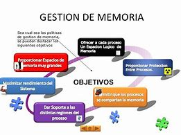
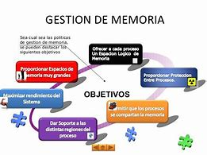

En informática básica, los elementos principales de un sistema operativo se pueden resumir en las siguientes categorías:
Núcleo (Kernel):
- Es la parte central del sistema operativo que gestiona el hardware y los recursos del sistema.
- Se encarga de la comunicación entre el software y el hardware.
Gestión de Procesos:
- Controla la creación, ejecución y finalización de procesos (programas en ejecución).
- Administra la asignación de tiempo de CPU y la planificación de tareas.
Gestión de Memoria:
- Se ocupa de la asignación y liberación de memoria RAM para los procesos.
- Utiliza técnicas como la paginación y segmentación para optimizar el uso de la memoria.
Sistema de Archivos:
- Organiza y gestiona el almacenamiento de datos en discos duros y otros dispositivos.
- Permite crear, leer, escribir y eliminar archivos y carpetas.
Gestión de Dispositivos:
- Controla y gestiona los dispositivos de hardware, como impresoras, discos duros, teclados y ratones.
- Utiliza controladores (drivers) para facilitar la comunicación entre el sistema operativo y el hardware.
Interfaz de Usuario:
- Proporciona un medio para que los usuarios interactúen con el sistema operativo.
- Puede ser una interfaz gráfica (GUI) o una interfaz de línea de comandos (CLI).
Seguridad:
- Implementa medidas para proteger los datos y recursos del sistema contra accesos no autorizados.
- Incluye autenticación de usuarios y control de permisos.
Redes:
- Facilita la comunicación y el intercambio de datos entre diferentes computadoras a través de redes.
- Permite compartir recursos como archivos e impresoras.
Resumen breve de la unidad
Elementos Principales de un Sistema Operativo
Diferentes tipos de sistemas operativos, ventajas y desventajas.
Formas de comunicación, modo texto, modo grafico.
Escritorio, icono, ventanas.
Operaciones elementales como administrador del S.O. y como usuario común.
Formas de organización de la información. Carpetas y archivos. (Crear, Renombrar, mover, copiar, eliminar, proteger).
Configuración de algunos elementos del sistema operativo.
 
